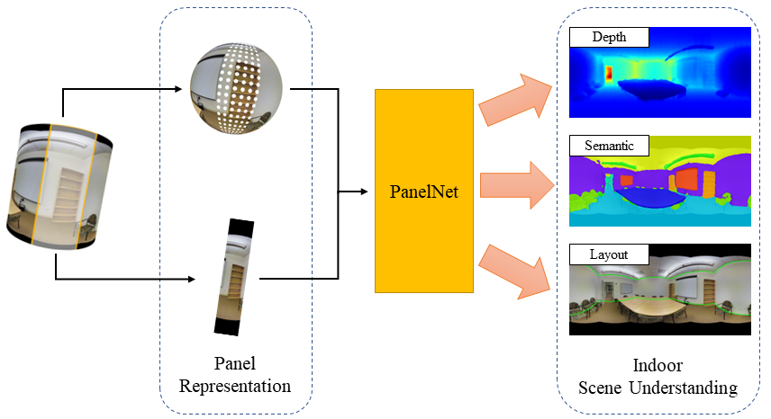

|
Pro bono office hour
Inspired by Prof. Kyunghyun Cho and Prof. Wei-Chiu Ma, I commit 30 minutes to 1 hour per week to meet with undergraduates, early-career graduate students, or whoever is in need about research, career development, potential research opportunities, or graduate student life. Please feel free to reach out via email if you would like to chat :)
|
News
- [2024.08] Started my journey as a Ph.D. student at Cornell University.
- [2024.05] Left Irreverent Labs after an exciting journey. Thank you all!
- [2023.10] I joined Irreverent Labs as a Machine Learning Engineer!
- [2023.06] Left Tencent Media Lab after a wonderful year. Thank you!
- [2023.03] Our PanelNet paper was accepted at CVPR 2023!
|
|

|
PanelNet: Understanding 360 Indoor Environment via Panel Representation
Haozheng Yu,
Lu He,
Bing Jian,
Weiwei Feng,
Shan Liu
CVPR, 2023
pdf
/
video
/
poster
We introduce the panel representation of panoramas to solve the indoor 360 understanding tasks.
|
|
|
Dense Keypoints via Multiview Supervision
Zhixuan Yu,
Haozheng Yu,
Long Sha,
Sujoy Ganguly,
Hyun Soo Park
NeurIPS, 2021 (Spotlight Presentation)
pdf
/
video
/
poster
We present a probabilistic epipolar constraint to learn a dense keypoint detector from unlabeled multiview images.
|
|
|
Monkey Segmentation and Multiview Reconstruction
Haozheng Yu
2021
I designed a bootstrapping strategy to fine-tune a Mask-RCNN on monkey data with only sparse keypoint annotations. I implemented a voxel-based visual hull reconstruction to generate 3D monkey mesh from multiview segmentation results.
|
|
Teaching
CS 4782: Intro to Deep Learning (Spring 2025), Cornell University - Teaching Assistant
|
|
{kind=link}
{kind=link}